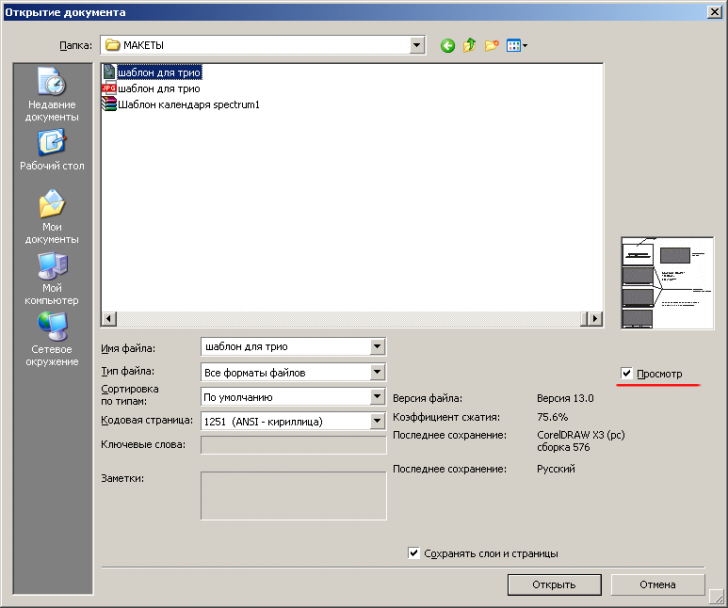

Превью в Corel Draw X5
Irinak69 / 14.11.2011, 22:57/00:41
Форум:
Не отображаются кореловские превьюшки файлов при открытии. В чем причина? Помогите, люди добрые!
Не отображаются кореловские превьюшки файлов при открытии. В чем причина? Помогите, люди добрые!
Приходят в голову 2 причины:
1) Файлы записаны без превьюшек.
2) Не выбран чекбокс "Preview" под окошком просмотра.
а когда это корел показывал превьюшки "при открытии"?
при открытии он тока "градусник" процесса показывает :)))
вы наверно имеете ввиду превьюшки в эксплорере?
так для этого надо было при установке не снимать галку с "Windows Shell Extension" :)
Я так понимаю, что имеется в виду окно открытия файлов "Open Drawing".
кэп, а галочка "просмотр" стоит?

это так у вас открывает корел 3, да еще и русская версия...
Irinak69 Присоединяюсь к Вашему вопросу. И как сохранить файл в Х5 с превьюшкой, где
на странице "Открыть файл" находится кнопка Preview ? И где при сохранении файла
можно написать заметки ? Работаю в Windows 7 64-битная версия. Corel Х5 - русскоязычная лицензионная.
Та же история. Работаю в Windows 7 64-битная версия. Только Corel англ.
Очень странно, там в окне open Recent(последние файлы) показываются превьюшки, а вот старые кореловские файлы он не видит...
Возможно, это связано с Windows 7/64бит.
Нашла выход: скачала просмотровщик XnViev - он показывает кореловские файлы, но опять-таки, файлы, сохраненные в 5 версии, не видит.
Irinak69 Кое что нашел по Вашему вопросу: на другой машине лицензионный русскоязычный CD Х5 работает под ОС Windows XP. После загрузки корела по-
является Экран приветствия. 2 кнопки внизу отмечены галочками: использовать экран по умолчанию и Всегда отображать экран при запуске. На экране слева вверху - просмотр не-
давно использованных файлов, слева внизу - Сведения о документе. Сверху посередине - Открыть последний. Внизу посередине - Открыть другой. Нажимаем. Появляется окно Откры-
тие документа. Справа кнопку Просмотр активируем галочкой. При выборе файла из списка
в окне появляется простенькое изображение, а в поле Заметки - описание файла (если оно
было сделано при сохранении). Вот так. По-моему, это проблемы ОС: в XP всё работает, а
в семёрке - нет. Как добиться Preview в Windows 7? Поскажите кто-нибудь !
а принт-скрин можете прислать?
недавние файлы видны, а вот если программа уже открыта и нужно открыть еще некоторые файлы, то их миниатюры не видны. Думаю, что это W7 заставляет нас напрягаться.
Страницы